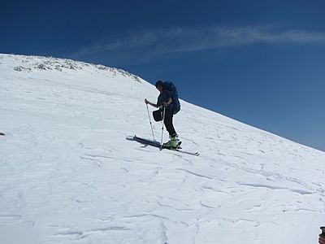
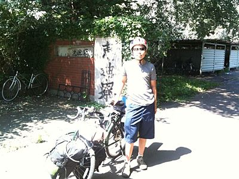
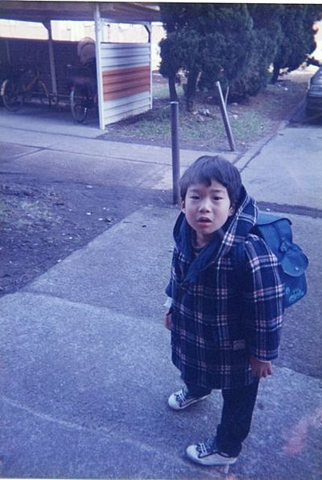
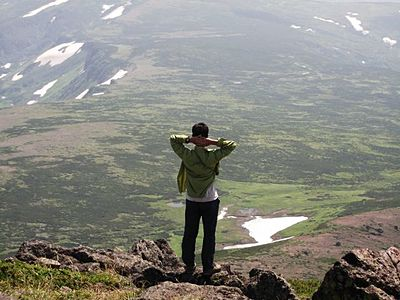
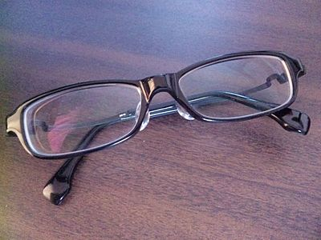

部員紹介 三年会
| 坂田龍玄（さかた りゅうげん） | ||
|  | 趣味 | 外出系全般 |
|---|---|---|
| 好きな漫画 | タッチ | |
| 好きな山行スタイル | 全部、特に冬 | |
| ワンゲルで一番楽しかった山行 | 夏合宿、槍穂縦走、年越し北八ヶ岳のどれか | |
| ワンゲルで一番きつかった山行 | 十石山スキー | |
| 行ってみたいところ | 知床藪とか日高とか | |
| やってみたいこと | 世界一周 | |
| 高校では生物部に所属し、当時からフィールドワークとして山に登っていた。そのため、道すがら出会う生き物に詳しいだけでなく、日本の山々に関する知識も豊富であり、頼もしい山男である。しかし油断は禁物。坂田は半径３メートル円内に坂田ワールドを展開し、「坂田理論」と呼ばれる奇怪な話術を操る。うっかり口車に乗せられると、大変なことに… | ||
| ひと言：(-_-)/~~~ | ||
| 鈴木啓太（すずき けいた） | ||
| 趣味 | 本屋や古本屋、図書館を巡ること | |
|---|---|---|
| 行ってみたいところ | 槍ヶ岳、JP～巻機の夏合宿のリベンジ | |
| やってみたいこと | 3年になったときに沢合宿をやってみたい | |
| どうにかしたいこと | 雨男であること | |
| 今年の目標 | 月２～３回は山行に参加したい | |
| 高校から山岳部に所属しており、インターハイ出場経験もある。言うまでもなく豊富な技術、体力を持ち、小柄な体からパワフルな登攀力を発揮する。日中は仕事をテキパキこなす寡黙な男だが、日が沈むと一早く寝て、大きないびきをたてる。そのため、「鈴木は夜しゃべる」と度々からかわれる。なお、本人は否認しているが、雨男であり、鈴木参加時の降水確率は実に８０パーセント近い（筆者調べ。） | ||
| ひと言：何故か少ない文系のワンゲルとして頑張ります。 | ||
| 竹尾陽子（たけお ようこ） | ||
 |
趣味 | 木の小物を作る |
|---|---|---|
| 好きな山 | 秋の道、夏の森 | |
| 行ってみたいところ | 山口県、香川県、富山県 | |
| やってみたいこと | 備品の把握 | |
| 将来の夢 | 孫と遊びつつ静かな老後 | |
| 今年の目標 | 駒場部室の掃除 | |
| 高校から登山をしていたため、体力、ノウハウともに豊富である。何かと女子力の高い竹尾であるが、中でも料理が得意であるため、山での炊事において大いに活躍し、男子部員から感嘆の声を集める。殊に会話の無法地帯になりがちなワンゲルの中で、大変重要なツッコミ役を担い、その強烈なツッコミによって3年会を束ねている。 | ||
| ひと言：春まで眠ります。 | ||
| 野呂岳史（のろ たけし） | ||
 |
趣味 | 読書、パズル、旅行、ゆとり登山 |
|---|---|---|
| 好きな山行スタイル | 道の長期山行 | |
| 行ってみたいところ | 九州の山（九重連山とか） | |
| やってみたいこと | 県境踏破、分水嶺の旅 | |
| 将来の夢 | 世界中を駆け巡る | |
| 今年の目標 | 冬山から生還！ | |
| 名前からもわかるように、ワンゲル家族育ち。今も、たまに親子で山に登っている。中学からワンゲル部で活動し、3年会の中で誰よりも山に親しんできた。山について話すときの野呂の表情は、この上なく幸せそうである。そんな、温厚で落ち着きのある野呂であるが、実は少し口が軽い。食事の席での過激な暴露話には、これからも要注意である。 | ||
| ひと言：人の３倍はこけてる気がする | ||
| 前山大貴（まえやま ひろたか） | ||
 |
趣味 | 野球観戦 |
|---|---|---|
| 好きな漫画 | ハンターハンター | |
| 好きな山行スタイル | のんびり縦走 | |
| 行ってみたいところ | 九州の山 | |
| ワンゲルで一番楽しかったこと | 夏合宿後の打ち上げ | |
| ワンゲルで一番つらかったこと | 入部後初山行での靴ずれ | |
| ワンゲル三年会の中で一番の不思議キャラ。夏合宿では、皆が偶然出くわした野生の鹿を見ている中一人で湖に向かって石を投げていたり、移動のため飛行機に乗る際手続きに手間取り危うく山に入る前からリタイアしかけたりといった伝説（？）を持つ。とはいえ最近はワンゲルにも慣れ山行中の地図読みや天気図などもうまくなり元々の体力の多さと相まって頼れる三年会の一員である。 | ||
| 松岸修平（まつぎし しゅうへい） | ||
 |
趣味 | 野球、誰かをいじること |
|---|---|---|
| 好きな山行スタイル | 藪、沢 | |
| 行ってみたいところ | 早く冬山に行ってみたい。 | |
| やってみたいこと | 日高とか知床とか行ってみたい（熊怖いけど） | |
| 将来の夢 | 自由気ままに暮らしたい。 | |
| 今年の目標 | 一回り大きくなる。 | |
| 3年会一のしっかり者。その上面倒見が良いこともあって、頭があがらない3年会も少なくない。大学から始めた登山であるが、熱心に勉強し、メキメキ腕を上げている。北海道出身のためかとても暑がりで、たぶん１年のうち６ヶ月はTシャツ１枚で過ごしているのではないだろうか。 | ||
| ひと言：山に行くと体調がよくなる気がする。 | ||
| 水野広介（みずの こうすけ） | ||
|  | 趣味 | 旅行、音楽鑑賞 |
|---|---|---|
| 好きな漫画 | 魔法陣グルグル、魔法陣グルグル2 | |
| 行ってみたいところ | 薬師見平 | |
| やってみたいこと | ワカサギ釣り | |
| 楽しかったこと | 強風の駒津峰 | |
| 今年の目標 | 藪合宿に参加 | |
| 駒場の院生。ひとり旅が好きで、自転車で北海道を一周したこともある。ワンゲルの活動に積極的に参加し、山の旅を満喫している。ちなみに、自他共に認める童顔の持ち主で、いいともの「年齢ギャップコンテスト」に出演したところ、不覚にも優勝してしまった。賞金の３万円は、夏合宿の旅費に充てたという。 | ||
| ひと言：この一年は怪我や体調不良が多かったので今年は頑張りたいです。 | ||
| 三宅博史（みやけ ひろし） | ||
 |
あぶない中毒 | 週一で二郎系ラーメン、２日に１缶サクマ式ドロップス |
|---|---|---|
| 趣味 | 映画、演劇、THE BEATLES | |
| 好きな山行スタイル | 急登、直登 | |
| 嫌いな山行スタイル | ☓☓先輩による車アプローチ | |
| 行ってみたいところ | ２週間くらいかけて夏の大雪を縦走したい | |
| やってみたいこと | 今から冬山が楽しみ | |
| 将来の夢 | 研究に勤しむ傍ら、時々仲間と山に登る、、そんな自由な生活 | |
| 中学高校時代はバドミントンをやっており、体力、運動神経ともに高い。道藪沢冬すべてに積極的に参加している。いろいろ出来るのにしょっちゅう惚気るせいで評価されない。藪漕ぎや沢登りについて知りたい人は話を聞いてみるといい。京都出身の関西人でコミュニケーション能力が高いので、話しやすい印象を与えるジロリアン。 | ||
| ひと言：山で食う飯は本当にうまい。 | ||
| 宮崎潤（みやざき じゅん） | ||
|  | 趣味 | 読書（米原万里，東海林さだおなど） |
|---|---|---|
| 好きな山行スタイル | 稜線上の平坦な道or藪 | |
| 楽しかったこと | 上ノ倉山下りの笹藪滑り | |
| つらかったこと | 初藪でのラッセル | |
| 将来の夢 | オーロラを見てみたい | |
| 今年の目標 | 直登を好きになる | |
| いつも率先してテントの入口に座って雑用をこなす偉い人、しかも成績優秀。よく面白い発言をするが、損な役回りをしていることが多い気がする。特技は早食い。 | ||
| ひと言：未熟者ですが，よろしくお願いします | ||
| 宮田晃碩(みやた あきひろ) | ||
|  | 趣味 | 考え事、散歩、俳句(?) |
|---|---|---|
| 好きな漫画 | 『堀さんと宮村くん』（web漫画） | |
| 好きな山行スタイル | 天気のいい日に森林限界上を縦走… | |
| やってみたいこと | お伊勢参りとかお遍路とか | |
| 心に残った山行 | 夏合宿の大雪、特に三川台 | |
| 3年会で最も学業優秀な宮田。「頭がいい→エラい！」という、単純な思考を持つ１年会から、エースと讃えられる。入部当初、「今は山をハイクしていますが、高校の時は、俳句を詠んでいました。」というオヤジギャグを連発し、現役部員は少なくとも４，５回聞かされた。悔しいが、ちょっと面白い。ちなみに彼の俳句の腕前は、全国大会で団体優勝するほどのもの。恐るべし、開成俳句部。 | ||
| ひと言：俳句からハイクへ。 | ||
| 持留侑(もちどめ たすく) | ||
|  | 趣味 | 野球観戦(中日) |
|---|---|---|
| フェチ | メガネ、うなじ、耳 | |
| 行ってみたいところ | アラスカ | |
| やってみたいこと | 放浪 | |
| 将来の夢 | 旅、結婚、育児、NPO | |
| 今年の目標 | 進級 | |
| 自他共に認めるレアキャラで、本人曰く「しっかり準備して行くのは向いてない」。ふらふらと何処かへ出掛けて行くのが好き。何かと面白いことを言うが、筆者のお気に入りは「帰ったところで部屋に俺というごみが増えるだけだからな」という名言。 | ||
| ひと言：クズです | ||
| 山中晴揮(やまなか はるき) | ||
 |
||
| 行ってみたいところ | 去年はなんだかんだで行けなかったので沢ならどこでも | |
|---|---|---|
| 好きな山行 | 晴れ山行 | |
| 嫌いな山行 | 雨山行 | |
| 楽しかったこと | 晴天の限界上からの景色 | |
| つらかったこと | 雨の中での薮こぎ | |
| 好きなアニメ | ストライクウィッチーズ | |
| 高校ではオリエンテーリングをやっていた。アニメ好きなツイッターの住人（ツイ廃ではないらしい）。基本的に人を君づけかさんづけで呼び物腰柔らかだが、ときどきさらっとえげつないことを言う。女の子同士が好きなのだそうだ。 | ||
| ひと言：ワンダーフォーゲルとオリエンテーリングとオリエンテーションは違います | ||
Copyright(c) 2013 TWV All rights reserved.